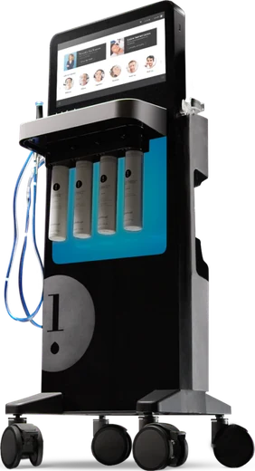
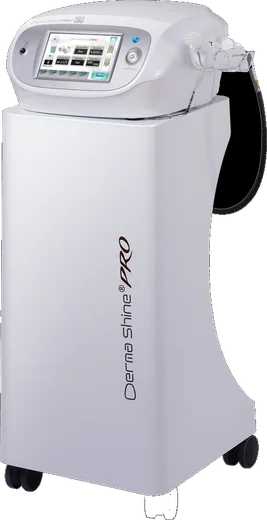
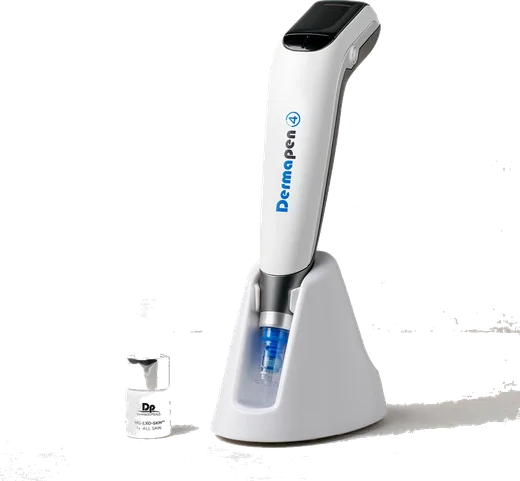
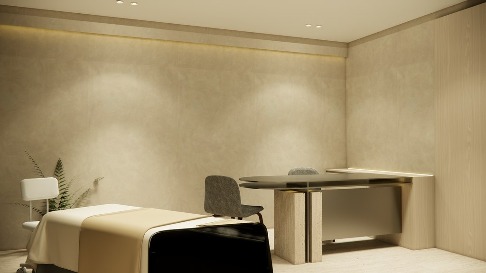

01
蘊膚體驗
從保濕、膚色到膚質，四個層次一次照顧完整。

海飛秀Hydrafacial 皮秒雷射Picosecond
皮秒雷射Picosecond
水光針Skin Booster
微針筆Dermapen適合第一次接觸醫美、想先把膚質養好的你。
第一次來，先認識自己的皮膚。
我們把四項養膚療程排成一段約三個月的節奏，讓你在每一次回來之間，看見皮膚慢慢變好的樣子。

勾起來最多的那幾項，就是你的起點。右邊的標籤，對應下面的體驗方式。
兩種體驗都包含完整的四項養膚療程；差別只在要不要多照顧眼周。
從保濕、膚色到膚質，四個層次一次照顧完整。

海飛秀Hydrafacial皮秒雷射Picosecond
水光針Skin Booster
微針筆Dermapen適合第一次接觸醫美、想先把膚質養好的你。
四項療程之外，再加上專為眼周設計的音波。
皮秒雷射Picosecond眼周皮膚較薄，我們用專門的方式另外照顧，與全臉音波分開規劃。
兩種體驗都可以再加上全臉電波或音波。我們會在養膚療程之後安排——先把膚質養好，再加一層支撐。
每次間隔約一到兩個月，讓皮膚在兩次之間有時間修復。點選下方，看看你的體驗會怎麼排。
先清潔、整理膚色，作為接下來療程的基礎。
補充水分，讓肌底穩定下來。
處理膚質與毛孔，完成這一輪養膚。
也可以依你的時間合併成兩次：海飛秀＋雷射＋水光針 → 微針筆
兩者都直接作用在皮膚裡，分開進行，讓皮膚在兩次之間完成修復。
能和其他療程同日進行，減少你往返的次數。
可以和任一次療程同天進行，也建議與其他療程錯開約一個月。
屬於預期中的反應。加強保濕與防曬，避免去角質與高溫環境。
Disrupt泛紅逐步退去，通常已能正常上妝、上班。這段時間的照顧，決定修復的品質。
Repair皮膚完成一輪更新。這時的狀態，才是這次療程真正的落點——接著，就是下一次回來的時候。
Renew
走完一輪，
你會知道自己的皮膚
對哪一種照顧最有感。
體驗不是終點。接下來，醫師會依你這三個月的變化，和你一起規劃之後的節奏。
沒關係。面診時醫師會先看過你的膚況，再建議適合的體驗方式，也可以到現場再決定。
可以。兩種體驗都能加選，我們會安排在養膚療程之後，可以在最後一次療程的當天一起進行，或另外安排。
眼周皮膚較薄、結構也和臉頰不同，所以使用專門針對眼周的方式與參數，與全臉音波分開規劃。
依療程不同，可能有短暫泛紅或緊繃，多數人隔天即可正常上班。實際狀況會在療程前由醫師說明。
走完一輪後，醫師會依你的變化，建議之後的保養節奏與項目。